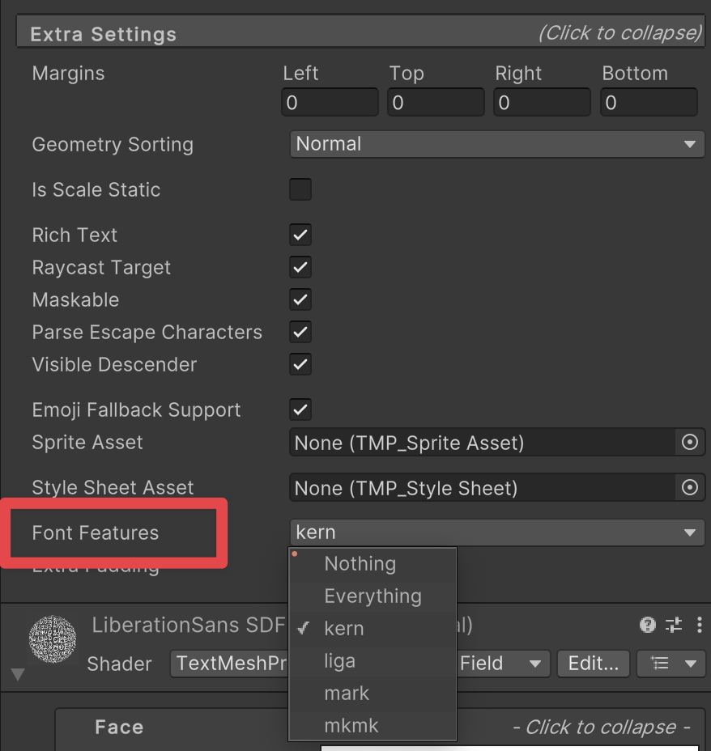

在 Scene 中添加 TextMesh Pro GameObject 即可创建文本。对象分为两类：
- TextMesh Pro UI Text GameObject 使用 Unity UI 系统，设计用于 Canvas。参考：TextMesh Pro UI Text GameObjects Unity's UI system
- TextMesh Pro 3D Text GameObject 在 Scene 中像普通三维 GameObject 一样工作。参考：TextMesh Pro 3D Text GameObjects
UI 文本对象（TextMesh Pro UI Text GameObjects）
TextMesh Pro UI 文本使用 Unity UI 系统，创建时会放在 Scene 的 Canvas 上。若场景没有 Canvas，Unity 会自动创建。参考：Unity's UI system
创建 TextMesh Pro UI Text GameObject：
- 选择 GameObject > UI (Canvas) > TextMesh Pro - Text。
- 在 TextMesh Pro (UGUI) Inspector 中输入文本。
- 按需调整 UI 文本属性。参考：UI text properties
附加着色器通道（Additional Shader Channels）
TextMesh Pro (UGUI) 会在生成文本网格时，自动启用父 Canvas 的 Additional Shader Channels 中的 TexCoord1、Normal 和 Tangent。这是 TMP Shader 所必需的；在 Canvas 中看到这些通道已启用属于正常行为。同一 Canvas 上的自定义 UI Shader 也会接收到这些附加顶点属性。
其他 TextMesh Pro UI 对象
除 UI 文本外，还可通过 GameObject > UI 菜单创建 TextMesh Pro Dropdown 和 Input Field。
它们与普通 uGUI（Unity UI）组件基本一致，但有以下区别：
- TextMesh Pro Dropdown 使用 TextMesh Pro Font Asset，而非常规 Unity 字体资源。更多信息参阅 Unity 手册中的 Dropdown 文档。参考：TextMesh Pro font assets
- TextMesh Pro Input Field 使用 TextMesh Pro Font Asset，并提供更多输入框设置选项。更多信息参阅 Unity 手册中的 Input Field 文档。参考：TextMesh Pro font assets
三维文本对象（TextMesh Pro 3D Text GameObjects）
TextMesh Pro 三维文本与 UI 文本基本一致，但不放在 Canvas 上，而是像 Scene 中的普通三维对象一样工作。
创建 TextMesh Pro 3D Text GameObject：
- 选择 GameObject > 3D GameObject > TextMesh Pro - Text。
- 在 TextMesh Pro Inspector 中输入文本。
- 按需调整三维文本属性。参考：3D text properties
OpenType 字体特性（FontFeature）
Font Features 定义字体资源的排版能力，包括字形替换和位置调整。目前支持：
- 连字（Ligatures）：将多个字形替换为单个字形，如 fi 或 ffl；特性标识为 liga。
- 字偶距（Kerning）：调整两个字形之间的相对位置；特性标识为 kern。
- 附加符号（Diacritical Marks）：调整基字形与标记字形的位置。Mark-to-Base（mark）定义标记字形相对基字形的调整；Mark-to-Mark（mkmk）定义标记字形相对基础标记字形的调整。
通过 Text 组件 Extra Settings 中的 Font Features 字段启用或禁用字体特性，位置见下图。
